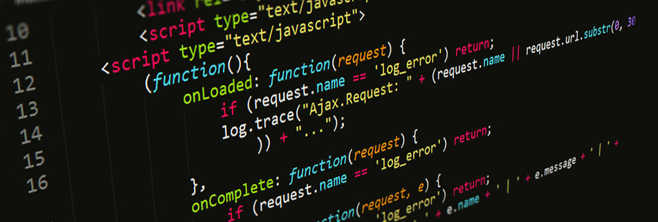
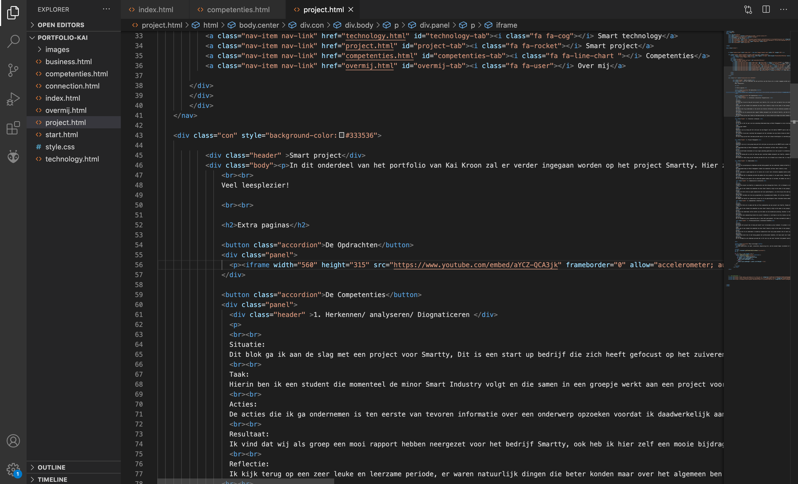
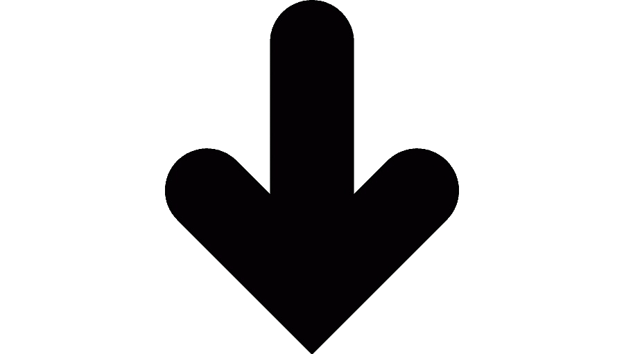
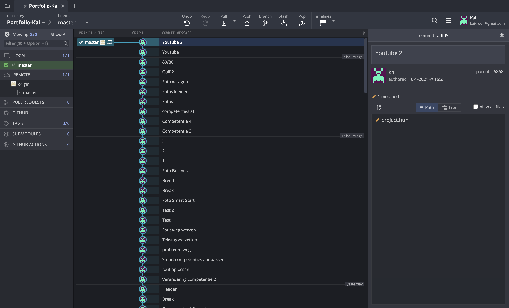
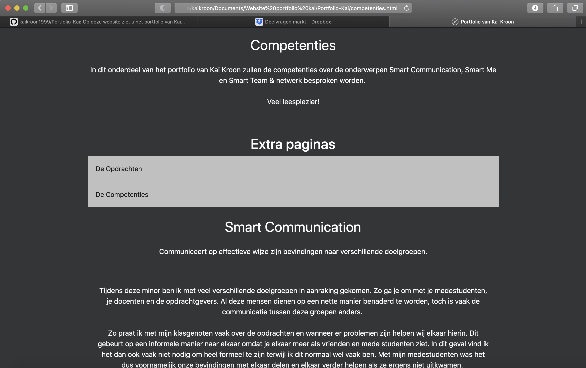
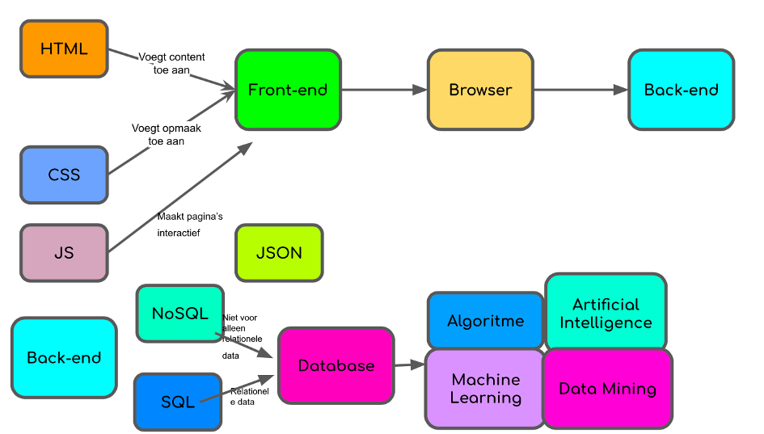

In dit onderdeel van het portfolio van Kai Kroon zal er verder ingegaan worden op het vak Smart Connection. Hier zullen onder andere de week opdrachten, de competenties en mijn ervaringen binnen dit vak besproken worden.
Veel leesplezier!

Extra paginas

Voor het maken en onderhouden van mij portfolio is er gebruik gemaakt van github en visual studio code. Github is hierin de server waarvan uit gewerkt wordt en de html en css codes zullen via visual studio code ingevuld worden.


Wanneer de codes zijn veranderd en toegevoegd in visual studio code dan zal we gebruik gemaakt worden van git kraken.
Git kraken zorgt ervoor dat de Veranderingen per stuk worden doorgevoerd naar de uiteindelijk website. Git kraken vond ik voornamelijk fijn werken omdat je elke aanpassing een aparte naam kan geven waardoor het makkelijk te controleren waar er iets fout gegaan is mocht dit van toepassing zijn.

Wanneer dit gebeurt is zal in mijn geval via we webbrowser Safari de aanpassingen gecontroleerd worden. Wanneer er iets niet goed is dient dit weer in visual studio code aangepast te worden en via Git kraken gepushed worden naar de website.
Van deze methode heb ik gebruik gemaakt omdat dit voor mij een overzichtelijke werkwijze is en wanneer ik iets verkeerds had aangepast kon dit makkelijk herstelt worden. Ook heb ik mijn neef om advies gevraagd wat hij vaak gebruikt, want hij studeert game development. Hij heeft mij ook een paar codes geleerd en ook geleerd hoe ik een zogenaamde accordeon kon toevoegen aan mijn website.
Uitwerkingen opdrachten Smart Connection
Tijdens Smart Connection ben ik bezig geweest met het werken met verschillende API’s, zo heb ik een API gemaakt waar je het weer in New York kan zien. Ik heb hiervoor gekozen omdat ik eigenlijk dit jaar naar New York zou gaan maar dit door alle omstandigheden rond om Covid-19 kon dit niet doorgaan.
Het weer in New York
Ook hebben we gewerkt aan een API waarin alle gegevens rondom Covid-19 in Nederland te zien zijn. Deze API vind u hieronder.
Covid-19 numbers in the
Datum:
Nieuwe Covid-19 aantallen in Nederland
Totale Covid-aantallen in Nederland
Nieuwe Covid-19 doden
Totaal aantal Covid-19 doden
Ook heb ik in het interactief hoorcollege van Witek geleerd hoe ik een Teachable tool leren programmeren en gebruiken. In deze tool kan een Appel of een banaan herkend worden aan de vormen en de kleur. Wanneer u bij het starten van deze tool een appel voor de camera houdt zou hij deze herkennen, wel is het aangeraden dit voor een neutrale achtergrond te doen.
Teachable Machine Image Model
Mocht u vragen of opmerkingen hebben dan kunt u via de onderstaande link een berichtje achterlaten.
Bedankt voor het lezen en ik hoop dat ik u zo een duidelijk beeld van mijn opdrachten heb gegeven.
Om mijn kennis op gebied van Smart Connection te verberen ben ik begonnen met mezelf extra te verdiepen in de begrippen rondom dit vak.
In het onderstaande model ziet u hoe wij met ons groepje de bergippen rondom Smart Connection bij elkaar hadden geplaatst.

Nadat we dit hadden gedaan ben ik mezelf meer gaan verdiepen in deze begrippen en heb ik de betekenis hiervan opgezocht. Een paar voorbeelden van deze begrippen zijn:
Machine learning:
Het gaat om het gebruiken van statistische/wiskundige technieken om computers in staat te stellen om te leren zonder dat ze expliciet geprogrammeerd te zijn. Met behulp van algoritmen die iteratief leren van data, kan machine learning verborgen inzichten vinden zonder expliciet geprogrammeerd te zijn waar te kijken
Artificial intelligence:
Simpel gezegd heeft kunstmatige intelligentie (Artificial Intelligence, AI) betrekking op systemen of machines die onze eigen intelligentie nabootsen om taken uit te voeren en die zichzelf tijdens dat proces kunnen verbeteren op basis van de vergaarde informatie
Data mining:
Datamining is het gericht zoeken naar (statistische) verbanden in gegevensverzamelingen met als doel profielen op te stellen voor wetenschappelijk of commercieel gebruik.
HTML:
Hyper Text Markup Language. Een regelsysteem van schrijfwijzen dat ervoor zorgt dat tussen websites direct gelinkt kan worden, omdat de verbindende servers allemaal deze zelfde taal gebruiken.
Ik heb het vak Smart Connection als zeer leerzaam ervaren. Het programmeren van dingen was voor mij helemaal nieuw, dus hierdoor vond ik het extra interessant. Ook heb ik gemerkt dat je veel zelf op onderzoek uit moet gaan als het gaat om programmeren en hoe meer je het doet hoe handiger je erin wordt. Wel vond ik sommige dingen lastig, zoals dat ik een klein typ foutje had gemaakt en doen ineens de taakbalk niet meet op de goede plek stond. Toch ben ik tevreden met het resultaat dat ik doormiddel van mijn portfolio heb neergezet, helemaal omdat ik gewoon nog geen ervaring hiermee had en hier zelf goed in gegroeid ben.
Ik vond het wel jammer dat alle lessen online waren. Hierdoor kreeg ik niet alles even goed mee. Wel heb ik veel aan mijn medestudenten gehad en heb ik ook mijn dingen met hen te delen.
Ik wil jullie heel erg bedanken voor de lessen en het leren programmeren.